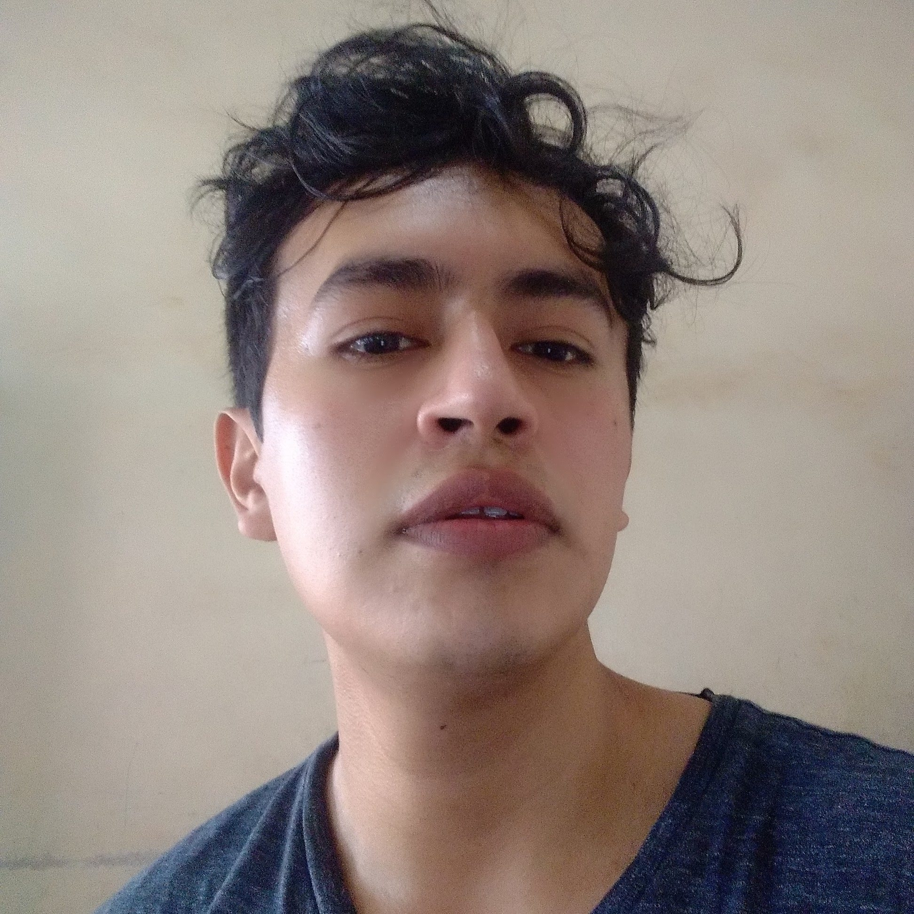

CV de Kevin Alvarez
Full Stack Developer
Over 5 years of experience building web aplications, both as frontend and backend
Educacion
- Ingenieria de Software
- 2014-2020. Universidad Gabriel Rene Moreno
- TOELF
- Late 2015. 640/700

Experiencia Profesional
- Docente Area Computacion
- 2015-2020. Instituto Tecnico Superior Capses
- TOELF
- Late 2015. 640/700
Premios
- 2 lugar Feria Universitaria
- 2015. Universidad Autonoma Gabriel Rene Moreno
- TOELF
- Late 2015. 640/700
Otros
- Mas de 35 cursos en linea
- Mas de 35 cursos en linea
- Mas de 35 cursos en linea